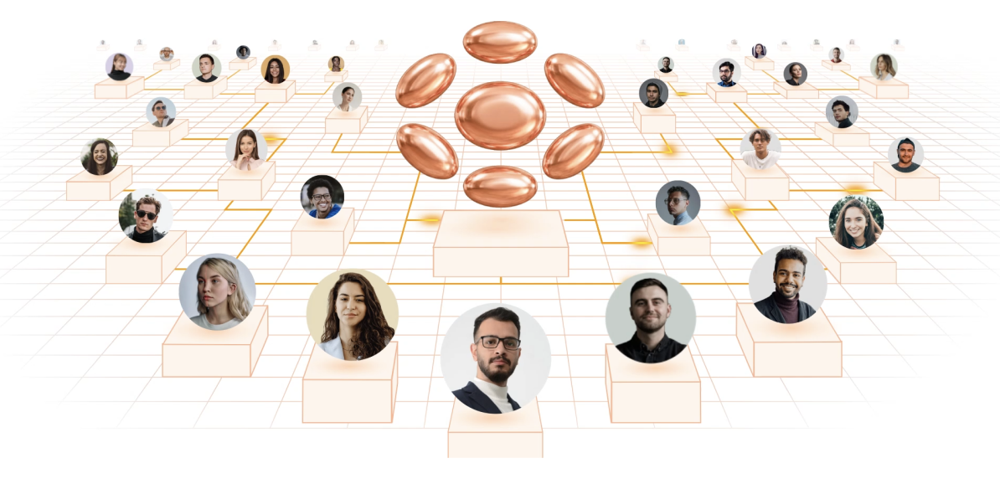

A cinematic pre-launch entrance: the voice of the system, the first international leaders, and a clear action to contact Atlas assistants before launch.
The second screen explains the emotional core: Atlas is forming an international community around transparent digital mutual support and the Smart Cycle center.

The third screen adds structure: Smart Cycle, DAO mechanics, knowledge, partners, governance and future modules. First emotion, then community, then system.